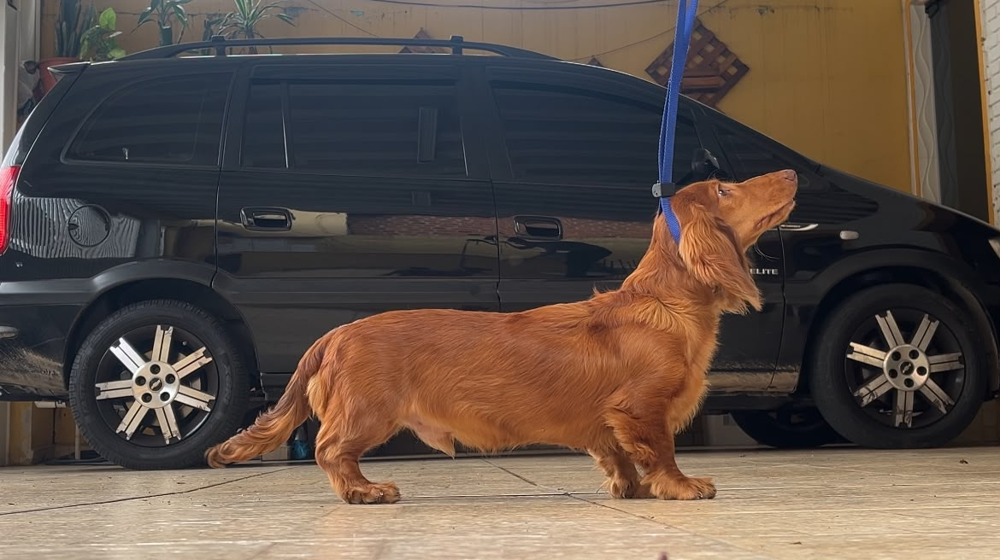
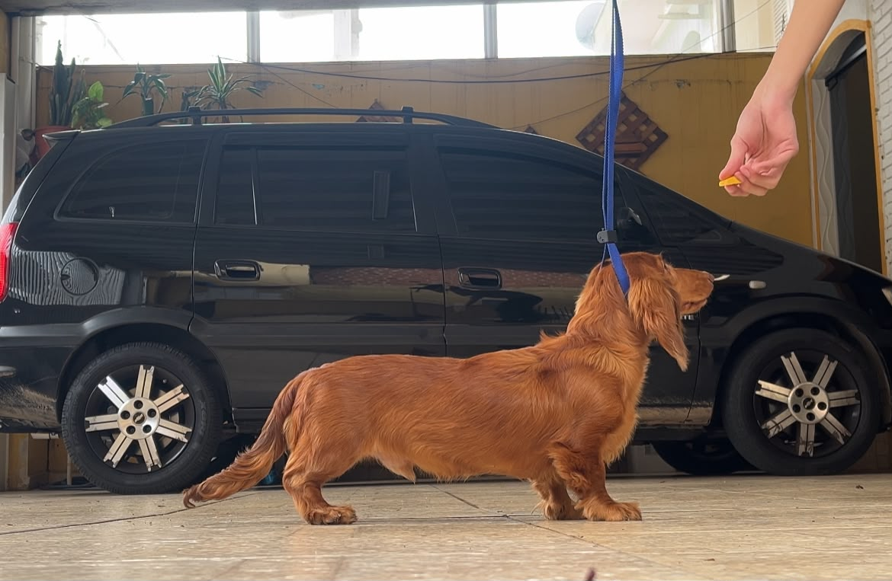
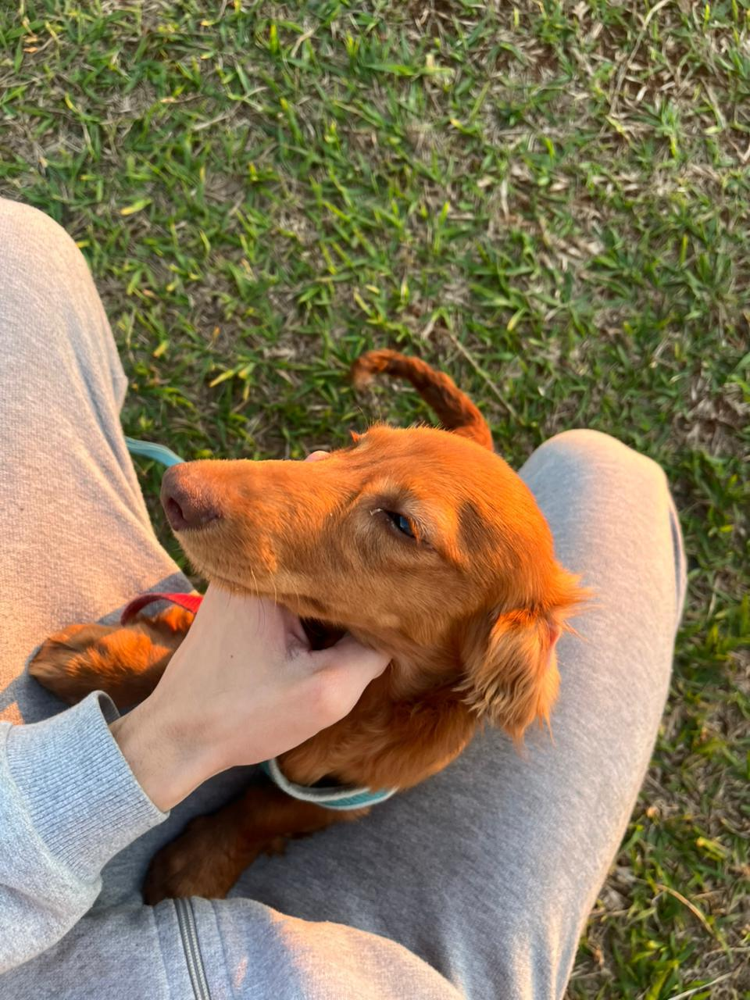
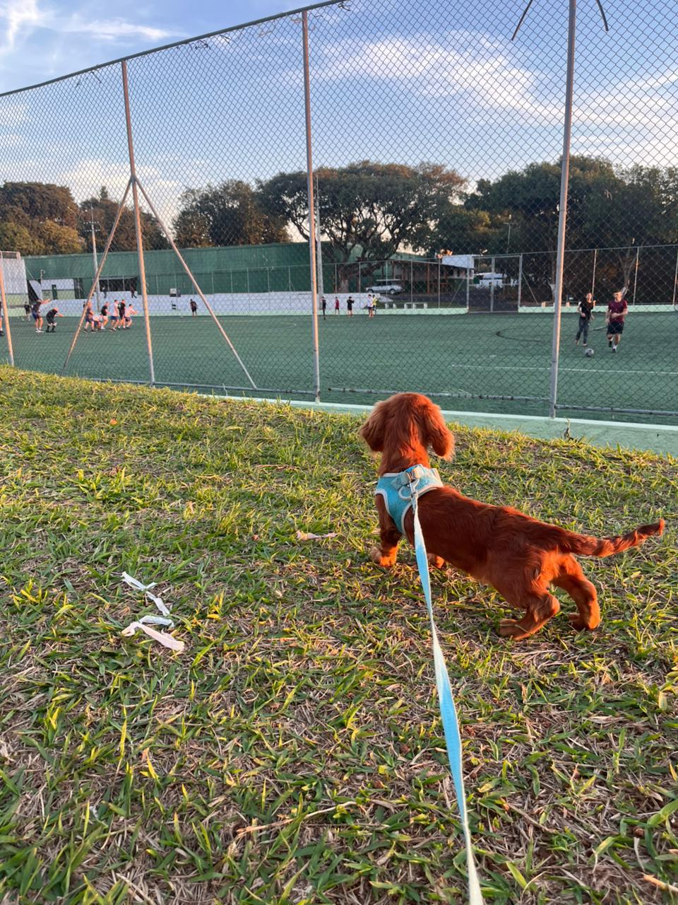

{{ m.titulo }}
{{ m.texto }}
 DKM
Canil
DKM
Canil
Criação com afixo DKM registrado na CBKC — Confederação Brasileira de Cinofilia — e acompanhamento junto ao Kennel Club de São Paulo, entidade filiada.


A trajetória do Teckel é uma das mais documentadas da cinofilia alemã: uma função de caça que virou tipo, o tipo que virou padrão e o padrão que virou uma das raças mais reconhecidas do mundo.
{{ m.texto }}
Arraste para o lado ou use as setas para percorrer a linha do tempo.
O Dachshund é reconhecido em três tamanhos e três pelagens — e a combinação entre eles define nove variedades oficiais. O tamanho não é medido pela altura, mas pela circunferência do tórax.
{{ v.texto }}
Dachshund de pelo longo vermelho, um dos futuros pais do Canil DKM. Cresceu dentro do nosso método de adestramento — socialização de rua, condução na guia e obediência antes de qualquer plano de criação.




Antes de entrar em qualquer programa de criação, um cão precisa provar temperamento em ambiente real: rua, barulho, outros cães e manejo. É o que os vídeos abaixo registram.
{{ e.texto }}
A conformação condrodistrófica do Dachshund traz predisposição a problemas de disco intervertebral. Nada disso impede uma vida ativa e longa — desde que o tutor saiba o que evitar desde o primeiro dia. Orientamos cada família na entrega e seguimos disponíveis depois dela.
Orientação de manejo, não substitui avaliação veterinária individual.
Três termos aparecem em toda conversa séria sobre filhote com registro. Entender o que cada um significa é a melhor proteção do comprador.
{{ t.texto }}
{{ g.texto }}
Plantel, ninhadas e o crescimento dos filhotes registrados semana a semana.